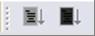
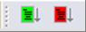
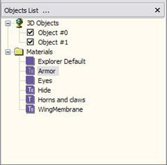
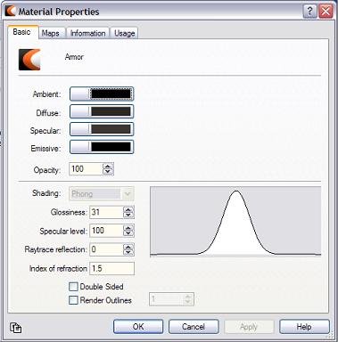
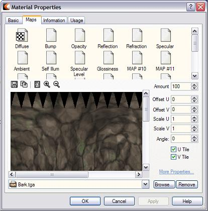
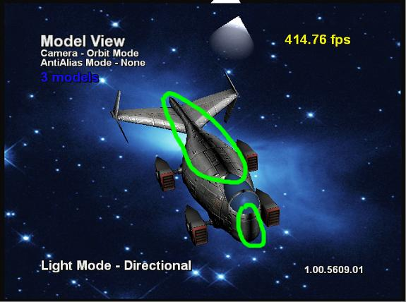

This white paper covers the advanced usage of Deep Exploration, the tool that is the front-end for the Xbox® Preview Pipeline. Deep Exploration provides a number of useful features that may not be obvious. These features are covered in more detail in the following sections.
The Xbox Preview buttons are part of a toolbar in Deep Exploration and usually sit in the upper right corner. The buttons look like this:

On mouseover, the lighter grey button turns green and displays the pop-up text "Preview on Xbox." The darker grey button turns red on mouseover and displays the pop-up text "(SLOW!!) Optimized Preview on Xbox."

The green button exports the current 3D or 2D scene and gets it to the Xbox as fast as possible. The red button exports the current 3D or 2D scene and then optimizes the triangle geometry into triangle strips. This can improve performance by up to 30 percent when previewing the object. Unfortunately, it takes time to create the triangle strips and this time can vary from nearly the same amount of time as the traditional green-button preview to ten or more minutes! The good news is that once you've previewed the scene with a given button (and haven't changed the scene in Deep Exploration), the previews are instantly available for the object with whatever button you already used. This allows you to switch back and forth and observe the performance improvements, if any. If you're just in a hurry to see what your object looks like, use the green button. If you want an optimized model for performance analysis reasons, use the red button.
The background image or color from Deep Exploration is sent to the Xbox. The current camera view is also duplicated on the Xbox. If the animation slider in Deep Exploration has been moved, the current frame is also sent to the Xbox so that the animation view window in the Xbox View Application (XbView) matches the Deep Exploration view window.
You can change the background image in Deep Exploration by right-clicking in the 3D view window and clicking Open Background, and then choosing the image file for the background image in both Deep Exploration and on the Xbox. There is no size limit on the background image. It is automatically scaled to consume the least amount of memory possible on the Xbox. The image size can affect performance in Deep Exploration.
You change the background color in Deep Exploration by clicking Tools from the main menu and then clicking Options. This brings up a dialog box with several tabs on it. Clicking on the Colors tab brings up a dialog box in which you can choose the background color (the first entry in the list of colors presented).
The background image overrides the background color. To return to a single background color with no background image, right-click in the 3D view window and click Clear Background on the pop-up menu. The background image and color are updated to the Xbox by simply hitting the desired preview button.
This feature enables the artist to change the materials on a given 3D model to some advanced materials that are not usually available directly from the 3D authoring package. Once the materials have been changed in Deep Exploration, they can be previewed on the Xbox by simply hitting one of the preview buttons. The materials are easy to change. Simply double-click the material you want to change in the current 3D model from the Objects List.

This brings up the Material Properties dialog box, which looks like this:

There are four tabs in the dialog box. The first two control the material properties. Changing these will change the visual appearance in Deep Exploration, but that view may not match what the Xbox draws. Deep Exploration will do it's best to utilize your particular PC video card to show you the presence of particular characteristics, but often there will be significant differences between how things look on the PC and the Xbox. This is the main reason for the Preview tool! It's also the reason that the following explanations are necessary.
On the Basic tab, you can set the overall ambient, diffuse, specular, and emissive properties of the material. You can also control the material's opacity and set whether it is double-sided.
This is the base color of the material under ambient light. The ambient light color and this color are blended together to the resulting ambient light. By setting this color to black, the ambient light color alone affects the material on the Xbox.
This is the base color of the material. It is blended with the diffuse texture set on the Maps tab. By default, the diffuse texture is always set to Amount 100, which means ignore this diffuse color. If the material has a diffuse texture and the amount of the texture is 100, be sure to set this to black to avoid doing extra work in the Xbox Pixel Shader. Otherwise, it works exactly as expected. The diffuse color is blended with the light intensity at each point on the object.
To get a specular highlight, set the specular color to the color desired for the highlight. This color is blended with the light color on the Xbox. To get just the light color, select pure white as the specular color (RGB 255,255,255.) To remove all specular highlights for this material, simply set the specular color to black (RGB 0,0,0.) You can also adjust the Glossiness and Specular level edit boxes. These control the size (Glossiness) and intensity (Specular level) of the specular spot on the object. Specular is per-pixel on the Xbox. The specular color can also modulated by the specular texture set with the Maps tab. The specular texture is used to provide the color of the specular highlight for that location on the model. The specular level can also be modulated with the specular level texture set with the Maps tab. Given a grey-scale specular level texture, the closer the color is to white on the specular level texture, the brighter the specular highlight appears for that location. More on the maps below.
The emissive color is added to all of the colors after they are computed and is not affected by lighting. The material itself is considered to be emitting light itself. Again, make sure this is black (RGB 0,0,0) if no emissive color is desired. If the color is very close to black (for example, RGB 0,0,1), the Xbox Pixel Shader will add it in to the final result. This is extra work that hurts performance and consumes one of the eight pixel shader combiner stages.
This controls the overall opacity of the material. This number ranges from 0 to 100, where 0 is completely transparent and 100 is completely opaque.
This is not used by the Preview tool.
These are covered under Specular above.
These are not used by the Preview tool.
This turns off back-face culling for the material. It is useful if the material is not completely opaque to draw the back faces.
This is not used by the Preview tool.

The Maps tab controls the textures applied to the material. The Offset U, Offset V, Scale U, Scale V, and Angle edit controls as well as the U Tile and V Tile check boxes do not do anything with the Preview tool. You cannot change the UV coordinates in Deep Exploration. To change a texture, double-click it. If a texture is already present, selecting the map will show a preview of the texture and its file name. To change textures, click Browse, which brings up a file dialog box, and pick a new texture. To clear the texture, click Remove.
The diffuse texture is the base texture for the material. The Amount edit control ranges from 0 to 100, where 0 means use none of the diffuse texture, and 100 means completely overwrite the diffuse color with the diffuse texture. If you completely overwrite the diffuse color by setting Amount to 100 (which is the default), be sure to set the diffuse color in the Basic tab to black (RGB 0,0,0) to avoid doing extra work in the Xbox Pixel Shader. The alpha channel of this texture is ignored. If the diffuse texture has an alpha channel, extract the alpha channel from the diffuse texture and save it as a separate texture map and apply it as the opacity map. This uses one of the four texture stages available.
The bump texture is specified as a grey scale height map that makes the material appear "bumpy." The Amount edit control in this case controls how "bumpy" the material appears. It ranges from 0 to 100, where 100 is very bumpy and 0 is minimally bumpy. Setting Amount to 0 still results in some bumpiness because bump-mapping is a fairly expensive operation and the Preview tool wants you to know you are using a bump texture. If you want no bump-mapping, remove the bump texture. Vertex colors are ignored for materials using bump-mapping. There aren't enough registers to pass the vertex colors to the pixel shader so we could not support both features with stock shaders. Do not mirror bump maps. The preview tool can't figure out what to do with the normals when this happens. If you see something like this,

the bump map is probably mirrored. An easy way to check is to remove the bump map and note if the weird black splotches go away. This uses one of the four texture stages available.
This texture map is used as the alpha channel for the diffuse texture. The opacity of the alpha is computed by averaging the RGB values for each color in the texture. For example, an RGB value of 0,0,255 would be treated as a grey-scale value of 85,85,85 (255 divided by 3 in each color component). The opacity map is combined with the diffuse texture when the Preview tool creates the textures and doesn't need its own texture stage in the pixel shader. The Amount setting for opacity has no effect in the Preview tool.
This texture map is used to specify the cube map used by the Preview tool for environment mapping on the Xbox. Cube maps are actually six textures, which makes it somewhat difficult to specify with the single texture entry provided by Deep Exploration. The Preview tool works around this by using the file names of the cube map. If you select any texture that specifies a cube map, the other five are automatically loaded. For example, a cube map is defined by these texture file names:
Selecting any of these as the reflection map will correctly create a cube map for the Preview tool. Selecting a file name that doesn't end in negx, negy, negz, posx, posy, or posz will create a cube map where the selected texture is used for all size faces of the cube map. The Amount edit control specifies the overall reflectivity of the material. It ranges from 100 (perfectly reflective) to 0 (no reflection). This is an expensive operation on the Xbox so make sure you never reflect 0! This uses one texture stage of the four available.
This texture specifies the color of the specular highlight that is blended with the light source color. The Amount edit control has no effect. The specular texture is applied like a diffuse texture and blended with the specular highlight. This uses one texture stage of the four available.
This texture controls how the specular highlight is blended with the underlying colors. The brighter the color in the specular level texture, the brighter the specular highlight at that point in the material. It can be thought of as an alpha mask for the specular highlight. The Amount edit control effects how much of the texture is used. At a level of 100, the texture is used exactly as specified. As the level drops off to 0, the texture has less and less influence over the specular highlight. Be careful not to specify a specular level map and then set the control to 0. This operation is not free even if Amount is set to 0! This uses one texture stage of the four available.
This texture is blended with the ambient light color. It will typically not be visible in the preview tool unless the ambient light level is increased in XbView. The Amount edit control has no effect with the Preview tool. This uses one texture stage of the four available.
This texture is treated as an emissive color. The texture is unaffected by the light sources and is simply blended into the resulting diffuse, specular, bump, and reflective stages. The Amount edit control has no effect in the Preview tool. This uses one texture stage of the four available.
None of the other maps has any effect in the Preview tool.
The Xbox pixel shader has a few important limitations. It can reference only four textures at a time, and it can combine colors in eight different stages. This means that selecting more than four textures in the Maps tab of the Material Properties dialog box will result in the preview not being possible on the Xbox. In fact, selecting fewer than four may also cause problems if you've specified diffuse or ambient colors. Unfortunately, there is no easy way to know which combinations will work and which won't without trying them. Some hints can help.
In addition to allowing the preview of 3D objects, the Preview tool will display 2D images. This can be useful for a quick preview of UI art or other flat artwork to see how it looks on Xbox.
| Description | Extension | Can Import? | Can Export? |
|---|---|---|---|
| Autodesk FLI/FLC file | .fli / .flc | Yes | No |
| CEL image | .cel | Yes | No |
| CompuServe GIF | .gif | Yes | No |
| DDS (DirectDraw Surface) | .dds | Yes | No |
| IFF image | .iff | Yes | No |
| JPEG 2000 | .jp2 / .jpc / .j2k / .jpx | Yes | Yes |
| JPEG image | .jpg / .jpeg | Yes | Yes |
| Layered Image Format | .LiF | Yes | Yes |
| Maya image file | .iff | Yes | Yes |
| PCX image | .pcx | Yes | No |
| Photoshop Document | .psd | Yes | No |
| Playstation .TIM picture | .tim | Yes | No |
| PNG image | .png | Yes | Yes |
| PPM image | .ppm | Yes | Yes |
| SGI image | .rgb / .rgba / .int / .inta | Yes | No |
| SOFTIMAGE PIC | .pic | Yes | No |
| TARGA image | .tga | Yes | Yes |
| TIFF image | .tiff / .tif | Yes* | Yes* |
| Windows bitmap | .bmp / .dib | Yes | Yes |
| Windows RLE bitmap | .rle | Yes | No |
* Uncompressed TIFF images can be imported and exported. If the TIFF is compressed, Deep Exploration will not import or export it.
| Description | Extension | Can Import? | Can Export? |
|---|---|---|---|
| 16-bit PGM file format | .pgm | Yes | No |
| 3D Metafile | .3dmf / .3dm | Yes | No |
| 3D Studio ASC file | .asc | Yes | Yes |
| 3D Studio Material Library | .mli | Yes | No |
| 3D Studio Mesh | .3ds | Yes | Yes |
| 3D Studio Project | .prj | Yes | No |
| 3DS MAX DCOM* | .max | Yes | Yes |
| AOFF (geo) file format | .geo | Yes | Yes |
| ASCII MAX Scene | .ase | Yes | No |
| AutoCAD Binary DXF | .dxb | Yes | No |
| AutoCAD drawing | .dwg | Yes | No |
| AutoCAD DXF | .dxf | Yes | Yes |
| Cinema 4D | .c4d | Yes | No |
| CPP OpenGL code | .cpp | No | Yes |
| Direct X Model | .x | Yes | Yes |
| Extended RAW triangles | .rax | Yes | No |
| HalfLife Model | .mdl | Yes | No |
| Homeworld Geometry | .peo / .geo | Yes | Yes |
| HPGL Files | .plt | Yes | No |
| Imagine Object | .iob | Yes | No |
| ISO G Code | .iso / .nc | Yes | No |
| Lightwave Object | .lwo / .lw | Yes | Yes |
| Lightwave Scene | .lws | Yes | Yes |
| Maya Ascii Scene* | .ma | Yes | Yes |
| Maya Binary Scene* | .mb | Yes | Yes |
| Nendo file | .ndo | Yes | No |
| Object File Format | .off | Yes | Yes |
| Open Flight Scene | .flt | Yes | No |
| Polygon File Format | .ply | Yes | No |
| Power Render Object | .pro | Yes | No |
| PTS file format | .pts | Yes | No |
| Quake 2 Model | .md2 | Yes | No |
| Quake 3 Model | .md3 | Yes | No |
| Quake MAP file | .map | Yes | No |
| Quake Model | .mdl | Yes | No |
| RAW file format | .raw | Yes | Yes |
| RH internal format | .rh | Yes | Yes |
| Shockwave 3D file | .w3d | No | Yes |
| Softimage dotXSI scene | .xsi | Yes | Yes |
| SPX file type | .spx | Yes | No |
| Stereo Lithography | .stl | Yes | Yes |
| trueSpace Object | .cob | Yes | Yes |
| trueSpace Scene | .scn | Yes | No |
| Unreal character | .psk | Yes | Yes |
| Wavefront Object | .obj | Yes | Yes |
| Wild Tangent Encrypted Format | .wsad | No | Yes |
| WMF files | .wmf | Yes | No |
| XDX Scene | .xdx | Yes | Yes |
| XGL | .xgl | Yes | No |
* Maya and MAX formats with an asterisk are supported only if the correct version of MAX or Maya is installed.
A 3D format can be converted to another 3D format if two conditions are met: 1) Deep Exploration must be able to import the file to convert, and 2) it must be able to export the desired format. Due to differences between 3D tools, no conversion is guaranteed to be 100 percent correct. Probably the largest reason for a conversion failing or creating a file that is identical is that some feature in the import file is not supported in the export file. For example, the input format might support more than one texture UV coordinate per vertex, and the export format may not support this. In such cases, the conversion is often unpredictable and must be tested to make sure it does what the user expects.
A 2D format can be converted to another 2D format if two conditions are met: 1) Deep Exploration must be able to import the file to convert, and 2) it must be able to export the desired format. Again, the conversions might lose data if, for example, the input format has an alpha channel but the output format doesn't support alpha channels.
Clicking Batch Conversion on the File menu brings up three choices for conversion: Picture Files (for converting 2D files), Geometry Files (for converting 3D files), and Deep Exploration can do a batch of renders from 3D formats that it can import. The user can easily select the output 2D format of the renders. The dialog box for all of these options is essentially identical and self-explanatory.
Deep Exploration can also rescale 2D images and set the compression factor for lossy compression formats.
In the lower right corner of the Deep Exploration window is a button that indicates which renderer is being used for the real-time view window. There are several possible selections depending on the video card installed and the drivers for that video card.
Because the Xbox contains an NV2A graphics chip from NVidia, it's a good idea for the PC using Deep Exploration to be running at least a GeForce 3 so that the chips are basically identical. However, any advanced video card that supports the 1.1 vertex and pixel shaders will work and will allow the user to preview the advanced materials on the PC side in a proxy view that, while not identical to the Xbox view, is still useful.